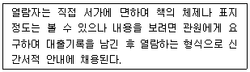
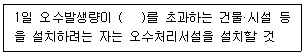
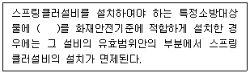

건축설비산업기사 (2008-03-02 기출문제)
1과목: 건축일반
1. 주택단지내의 건물 배치계획에서 남북간 인동간격의 결정요소와 가장 관계가 먼 것은?
- 대지 경사도
- 태양의 고도
- 건물의 높이
- 창의 크기
(정답률: 94%)

2. 점토질 지반에 대한 설명 중 틀린 것은?
- 함수량이 감소하면 지내력이 커진다.
- 점착력이 강하다.
- 압밀성이 없다.
- 내부마찰각이 작다.
(정답률: 알수없음)
3. 벽돌쌓기 중 한 켜에서 마구리와 길이를 번갈아 놓고 쌓고 다음 켜는 마구리가 길이의 중심부에 놓이게 쌓는 쌍기법은?
- 영식쌓기
- 미식쌓기
- 불식쌓기
- 화란식쌓기
(정답률: 알수없음)
4. 블록의 빈 속에 철근과 콘크리트를 부어넣어 보강한 것으로 수직하중·수평하중에 견딜 수 있는 가장 이상적인 블록구조는?
- 조적식블록조
- 블록장막벽
- 거푸집블록조
- 보강블록조
(정답률: 67%)
5. 다음과 같은 특징을 갖는 도서관의 출납 시스템은?

- 자유개가식
- 안전개가식
- 반개가식
- 폐가식
(정답률: 91%)
6. 다음 중 주택설계의 기본방향과 가장 거리가 먼 것은?
- 주부 동선의 최대화
- 가족본위의 주택
- 가사노동의 경감
- 생활의 쾌적함 증대
(정답률: 100%)
7. 코너 비드(corner bead)와 가장 관계가 깊은 것은?
- 계단 손잡이
- 기둥의 모서리
- 거푸집
- 계단의 미끄럼방지
(정답률: 94%)
8. 다음 중 상점으로 들어가기 쉬운 구성상의 요건으로 옳지 않은 것은?
- 보도면에서 자연스럽게 유도될 수 있도록 평탄할 것
- 바닥면은 상품이나 진열설비와 무고나하게 주목성 있는 자극적인 색채로 할 것
- 미끄러짐이나 소음이 없어 걷기 쉬울 것
- 심리적인 저항감을 느끼지 않도록 할 것
(정답률: 100%)
9. 블록구조에서 테두리보를 설치하는 목적과 가장 관계가 먼 것은?
- 벽체를 일체식 벽체로 만들기 위하여
- 횡력에 대한 수직균열을 막기 위하여
- 가로 철근의 끝을 정착시키기 위하여
- 집중하중을 받는 블록을 보강하기 위하여
(정답률: 70%)
10. 아파트의 발코니에 대한 설명 중 옳지 않은 것은?
- 난간의 높이는 최소 0.7m 이상으로 설치한다.
- 유아의 유희 및 일광욕, 침구, 세탁물 등의 건조장 등으로 이용된다.
- 발판이 될 수 있는 것을 설계하지 말아야 한다.
- 옆집과의 격벽은 비상시에 옆집과 연결이 될 수 있는 구조로 하는 것이 좋다.
(정답률: 82%)
11. 철근콘크리트 구조의 구성원리와 가장 거리가 먼 것은?
- 철근은 인장력을 부담하고, 콘크리트는 압축력을 부담한다.
- 철근과 콘크리트의 열팽창계수는 거의 같다.
- 철근과 콘크리트는 부착력이 양호하다.
- 내화성이 작은 콘크리트는 내화성이 큰 철근으로 보강하여 구조체는 내화적이 된다.
(정답률: 67%)
12. 다음 중 병원 중앙진료부의 위치로 가장 알맞은 곳은?
- 외래부와 현관부 사이
- 외래부와 병동부 사이
- 외래부와 관리부 사이
- 외래부와 공급부 사이
(정답률: 100%)
13. 사무소 건축에서 화장실의 위치에 대한 설명 중 옳지 않은 것은?
- 각 사무실에 동선이 간단할 것
- 분산시키지 말고 되도록 각층의 1 또는 2개소 이내에 집중해 있을 것
- 각 층마다 공통의 위치에 있을 것
- 계단실, 엘리베이터 홀과는 접근해 있지 않을 것
(정답률: 85%)
14. 다음의 철근콘크리트구조의 보에 관한 설명 중 옳지 않은 것은?
- 벽돌이나 블록벽 등에 얹혀 있는 보는 단순보로 볼 수 있다.
- 주요한 보는 압축측에도 철근을 배근하는 복근으로 한다.
- 바닥판의 일부가 보의 일부로 간주될 때 이를 T형보라 한다.
- 단순보의 주근은 양단부에서는 하부에, 중앙부에서는 상부에 더 많이 배근한다.
(정답률: 알수없음)
15. 다음의 철골보에 대한 설명 중 옳지 않은 것은?
- 조립보에는 판보, 격자보, 래티스보, 트러스보 등이 있다.
- 판보에서 웨브판의 좌굴을 방지하기 위하여 스티프너를 사용한다.
- 형강보는 가공이 간단하고 현장조립이 신속하다는 장점이 있다.
- 철골보는 전단이나 휨에 대한 내력이 좋아 처짐이 발생하지 않으므로 처짐 한계를 설정할 필요가 없다.
(정답률: 알수없음)
16. 철골 기둥의 하중을 기초로 전달시키는 기능을 하는 부재는?
- 데크 플레이트(deck plate)
- 베이스 플레이트(base plate)
- 스티프너(stiffner)
- 플랜지(flange)
(정답률: 알수없음)
17. 다음 중 사무소 건축의 최상층을 2중 천장으로 하는 가장 주된 이유는?
- 단열과 옥상 슬래브의 경사 확보
- 최상층으로의 직사일광 유입 차단
- 외부공간으로부터의 소음 차단
- 최상층에서의 외부 조망 확보
(정답률: 73%)
18. 호텔건축에 대한 설명으로 잘못된 것은?
- 사교부분은 공공성을 주체로 하며 호텔 전체의 매개공간 역할을 한다.
- 공공부분은 호텔의 가장 중요한 부부능로, 이에 의해 호텔의 형이 결정된다.
- 관리부분은 경영과 서비스의 중추적 핵이 되는 부분이다.
- 숙박부분은 시티 호텔의 경우 부지의 제한으로 대지경계선에 따라 모양이 결정되기 쉽다.
(정답률: 72%)
19. 호텔, 은행 등의 출입구에 설치하여 차가운 외기의 유입과 실내의 온기 유출을 방지하고 출입인원을 조절할 목적으로 사용하는 출입문의 종류는?
- 미서기분
- 회전문
- 접문
- 여닫이문
(정답률: 알수없음)
20. 학교의 운영방식 중 학급, 학생 구분을 없애고 학생들은 각자의 능력에 맞게 교과를 선택하는 방식은?
- 플래툰형(P형)
- 달톤형(D형)
- 종합교실형(U형)
- 교과교실형(V형)
(정답률: 92%)
2과목: 위생설비
21. 연면적 3,000m2의 사무소 건물에 필요한 1일 급수량은? (단, 이 건물의 유효 바닥면적은 연면적의 60%이고, 유효면적당 인원은 0.2인/m2, 1인 1일당 급수량은 0.1m3 으로 한다.)
- 3.6 m3/d
- 6 m3/d
- 36 m3/d
- 60 m3/d
(정답률: 64%)
22. 다음 중 수도인입관으로 급수량을 충분히 얻을 수 없는 경우에 대한 대책으로 가장 알맞은 것은?
- 펌프의 양수량을 크게 한다.
- 수수조 용량을 크게 한다.
- 고가수조의 높이를 크게 한다.
- 감압밸브를 설치한다.
(정답률: 75%)
23. 다음 중 배수배관에서 통기관을 설치하는 목적과 가장 관계가 먼 것은?
- 사이폰 작용 및 배압에 의해서 트랩 봉수가 파괴되는 것을 방지하기 위하여
- 배수계통 내의 배수의 흐름을 원활하게 하기 위하여
- 배수관 계통의 환기를 도모하여 관내를 청결하게 유지하기 위하여
- 배수관의 청소·점검을 용이하게 하기 위하여
(정답률: 75%)
24. 다음 중 배수관에서 트랩(trap)의 설치 목적으로 가장 알맞은 것은?
- 실내로의 악취침입방지
- 배관공사의 편리
- 통기관의 설치 용이
- 배수량의 원활한 조정
(정답률: 100%)
25. 다음의 배수 및 통기배관의 검사 및 시험에 관한 설명 중 틀린 것은?
- 기압시험은 만수시험보다 배수관의 누수 개소 발견에 상당한 노력을 필요로 한다.
- 박하시험을 연기시험과 동등한 시험이지만, 연기 대신에 박하유를 이용하는 시험이다.
- 만수시험시 시험 대상 부분의 최고 위치의 개구부를 제외한 기타 개구부는 밀폐한 후 관내의 누수의 유무를 검사한다.
- 연기시험을 건물 내 통기관 배관공사가 일부 완료된 후 위생기구 설치 전에 실시하는 것이 바람직하다.
(정답률: 알수없음)
26. 급탕설비의 안전장치 중 팽창관에 관한 설명으로 옳은 것은?
- 보일러, 저탕조 등 밀폐 가열장치 내의 압력 상승을 도피시키기 위해 사용된다.
- 팽창관에는 밸브를 설치하여야 한다.
- 팽창관의 배수는 직접배수한다.
- 팽창관에는 소음이 발생하므로 사일렌서를 설치한다.
(정답률: 93%)
27. 다음의 동 및 동합금관의 특징에 대한 설명 중 옳지 않은 것은?
- 상온공기 속에서는 변하지 않으나 탄산가스를 포함한 공기 중에는 푸른 녹이 생긴다.
- 연수에 내식성은 크나 담수에는 부식된다.
- 아세톤, 에테르, 프레온 가스, 휘발유 등 유기약품에는 침식되지 않는다.
- 암모니아수, 습한 암모니아가스, 초산, 진한 황산에는 심하게 침식된다.
(정답률: 77%)
28. 다음의 통기배관에 대한 설명 중 옳지 않은 것은?
- 간접배수계통 및 특수배수계통 통기관은 다른 통기계통에 접속하지 말고 단독으로 대기 중에 개구한다.
- 배수수직관의 상부는 연장하여 신정통기관으로 사용하며, 대기 중에 개구한다.
- 통기수직관의 하부는 배수수평주관에는 접속하지 않으며, 최저 위치에 있는 배수수평지관보다 높은 위치에서 배수수직관에 접속한다.
- 지붕을 관통하는 통기관은 지붕으로부터 150mm이상 입상하여 대기 중에 개구한다.
(정답률: 알수없음)
29. 옥내소화전 설비에서 압력수조를 이용한 가압송수장치에서 압력 수조의 압력은 다음의 어느 식에 의하여 산출한 수치 이상으로 하여야 하는가? (단, P : 필요한 압력, P1 : 소방용호스의 마찰손실 수두압, P2 : 배관의 마찰손실 수두압, P3 : 낙차의 환산수두압, 단위는 MPa)
- P = P1 + P2 + P3 + 0.17
- P = P1 + P2 + P3 - 0.17
- P = P1 + P2 - P3 + 0.17
- P = P1 × P2 × P3 + 0.17
(정답률: 84%)
30. 관경이 50A이고 급수관의 길이가 20m인 고가탱크에 2m/sec의 속도로 물을 올려 보낼 때 마찰손실수두는? (단, 마찰계수 f = 0.01 이다.)
- 0.82m
- 1.63m
- 2.04m
- 3.71m
(정답률: 34%)
31. 국소식 급탕방식의 일반적 특징에 대한 설명 중 옳지 않은 것은?
- 급탕개소가 적기 때문에 가열기, 배관길이 등 설비 규모가 작다.
- 급탕개소마다 가열기의 설치 스페이스가 필요하다.
- 건물완공 후에도 급탕 개소의 증설이 비교적 쉽다.
- 배관 및 기기로부터의 열손실이 많다.
(정답률: 50%)
32. 일반적으로 소규모 건물의 설계시에 관경 절정이나 중규모 이상인 건물의 설계 도중에 관경을 개략적으로 계산할 때 사용되는 급수관의 관경 결정방법은?
- 관균등표에 의한 방법
- 압력수조에 의한 방법
- 관마찰저항선동 의한 방법
- 동시기구수에 의한 방법
(정답률: 84%)
33. 다음 중 급탕설비에서 순환펌프의 순환수량 결정방식으로 가장 알맞은 것은?
- 사용 수량과 같게 한다.
- 순수 부하단위의 3/4으로 한다.
- 급탈양의 15~25% 로 한다.
- 배관, 기기 등의 순환관로 열손실량으로 구한다.
(정답률: 알수없음)
34. 다음의 개인용 위생기구 중 기구급수 부하단위가 가장 작은 것은?
- 주방싱크
- 대변기
- 욕조
- 세면기
(정답률: 84%)
35. 급수관의 수압시험 방법에 대한 설명 중 옳지 않은 것은?
- 배관의 일부 또는 전부를 완료하였을 때 개구부를 플러그로 막고 실시한다.
- 배관 도중에 일시적으로 설치된 공기 빼기 밸브를 사용하여 완전히 배기한 후에 서서히 가압을 하면서 행한다.
- 시험압력의 유지시간은 시험압력에 도달한 후, 배관공사의 경우는 최소 10분으로 한다.
- 고가수조 이하 계통의 시험압력은 배관의 최저부에서 실제로 받는 압력의 2배 이상으로 한다.
(정답률: 50%)
36. LPG와 LNG의 특성에 대한 설명 중 옳지 않은 것은?
- LPG는 메탄(CH4)이 주 성분이다.
- LNG는 액화천연가스를 의미한다.
- LNG는 공기보다 가볍다.
- LPG는 연소시 이론공기량이 많다.
(정답률: 알수없음)
37. 도기질 위생 기구에 대한 설명으로 틀린 것은?
- 강도가 커서 내구력이 있다.
- 금속으로 된 접속물과 연결이 용이하다.
- 산, 알칼리에 침식되지 않는다.
- 오수, 악취를 흡수하지 않는다.
(정답률: 70%)
38. 다음 중 정화조의 설계 순서에서 가장 나중에 이루어지는 사항은?
- 처리 대상 인원 산출
- 오수 저와 성능 결정
- 정화조 용량 산정
- 오수량 결정
(정답률: 90%)
39. 옥내소화전설비에서 펌프의 토출량은 옥내소화전이 가장 많이 설치된 층의 설치개수(옥내소화전이 5개 이상 설치된 경우에는 5개)에 최소 얼마를 곱한 양 이상이 되도록 하여야 하는가?
- 80 ℓ/min
- 130 ℓ/min
- 170 ℓ/min
- 260 ℓ/min
(정답률: 47%)
40. 강관의 이음쇠와 사용목적의 연결이 옳지 않은 것은?
- 관의 방향을 바꿀 때 – 엘보우
- 동일한 관경의 관을 직선 연결할 때 – 유니온
- 관을 도중에서 분기할 때 – 부싱
- 관의 끝을 막을 때 – 캡
(정답률: 알수없음)
3과목: 공기조화설비
41. 벽체의 열관류율 단위로 알맞은 것은?
- kJ/m·h
- W/m·K
- W/m2
- W/m2·K
(정답률: 80%)
42. 다음의 펌프에 대한 설명 중 옳지 않은 것은?
- 펌프의 실양정은 흡입측과 토출측의 수위와 펌프의 설치 위치에 따라 다르다.
- 비속도가 작은 펌프는 양수량이 변화하여도 양정의 변화가 작다.
- 동일 특성의 펌프를 병렬 운전할 경우 실제로 유량이 2배로 증가한다.
- 순환펌프로는 주로 원심식 펌프가 사용된다.
(정답률: 80%)
43. 계산된 냉온수량을 수송하기 위한 적정 관경을 마찰저항 선도를 사용하여 선정할 때, 우선 정해져야 할 값은?
- 레이놀즈수나 배관길이
- 수격반경이나 유체의 동점성 계수
- 제반 손실을 고려한 관마찰 저항이나 유속
- 배관길이나 사용배관재의 조도
(정답률: 알수없음)
44. 전공기 방식의 특징에 대한 설명 중 옳지 않은 것은?
- 외기냉방이 가능하다.
- 환기효과가 크다.
- 실내에 배관으로 인한 누수의 우려가 많다.
- 열매체인 냉·온풍의 운반에 필요한 팬의 소요동력이 냉·온수를 운반하는 펌프동력보다 많이 든다.
(정답률: 54%)
45. 공기조화기 내의 가습이나 감습 장치에 설치되는 엘리미네이터(eliminator)의 용도로 가장 알맞은 것은?
- 분진 등의 정화
- 폐열 회수
- 분무수가 밖으로 나가는 것의 방지
- 내부의 청소 및 점검
(정답률: 73%)
46. 다음의 공지화방식에 대한 설명 중 옳은 것은?
- 각 층 유니트방식은 각 층마다의 부하변동에 대응할 수 있다.
- 단일덕트방식은 덕트가 2개의 계통이므로 설비비가 많이 든다.
- 팬 코일 유니트방식은 덕트 방식에 비해 유니트의 변경이 어렵다.
- 유인 유니트방식은 외기냉방의 효과가 크다.
(정답률: 59%)
47. 실내 기류 분포 중 콜드 드래프트(cold draft)의 원인이 아닌 것은?
- 인체 주위의 공기온도가 너무 낮을 때
- 인체 주위의 기류속도가 클 때
- 주위 공기의 습도가 높을 때
- 주위 벽면의 온도가 낮을 때
(정답률: 82%)
48. 다음 중 공조기(AHU)에 내장된 전열교환기에 대한 설명으로 가장 알맞은 것은?
- 환기와 배기의 현열교환 장치
- 환기와 배기의 잠열교환 장치
- 배기와 도입되는 외기와의 잠열교환 장치
- 배기와 도입되는 외기와의 현열 및 잠열교환 장치
(정답률: 85%)
49. 냉각탑의 쿨링 어프로치(cooling approach)란?
- 냉각탑 입구수온(℃) - 냉각탑 출구수온(℃)
- 냉각탑 입구수온(℃) - 입구공기의 습구온도(℃)
- 냉각탑 출구수온(℃) - 입구공기의 습구온도(℃)
- 냉각탑 입구수온(℃) - 입구공기의 건구온도(℃)
(정답률: 70%)
50. 배관 지지물의 구비요건 중 옳지 않은 것은?
- 관의 신축으로 움직이지 않을 것
- 배관 진동을 구조체에 전달되지 않게 할 것
- 외부의 진동이나 충격에 견딜 것
- 배관의 자중과 유체의 하중 등에 견딜 것
(정답률: 82%)
51. 다음 중 공기조화배관에 사용되는 신축이음의 종류에 속하지 않는 것은?
- 벨로우즈형
- 슬리브형
- 루프형
- 리프트형
(정답률: 84%)
52. 4각 덕트의 엘보우에서 장변치수가 150mm, 국부저항손실계수는 0.33 이며, 재료의 마찰저항계수는 0.03이라면 국부저항의 상당길이(m)는?
- 1.12
- 1.65
- 2.33
- 3.75
(정답률: 60%)
53. 급기구와 배풍기에 의한 환기방식을 적용하는 장소는?
- 화장실
- 전산실
- 기계실
- 사무실
(정답률: 알수없음)
54. 다음의 습공기에 대한 설명 중 옳은 것은?
- 습공기를 가열하면 상대습도는 증가한다.
- 습공기를 가열하면 절대습도는 일정하다.
- 습공기를 가열하면 엔탈피는 감소한다.
- 습공기를 가열하면 비체적은 감소한다.
(정답률: 84%)
55. 실의 크기가 8m×6m×3m인 회의실에 20명이 있다. 필요환기량을 환기횟수로 나타내면 얼마인가? (단, 1인당 필요환기량은 최소 51m3/h, 최대 85m3/h 이다.)
- 2~4 [회/h]
- 4~6 [회/h]
- 6~8 [회/h]
- 8~12 [회/h]
(정답률: 50%)
56. 자기청소의 특성이 있어 분진의 누적이 심하고 이로 인해 송풍기 날개의 손상이 우려되는 공장용 송풍기에 적합한 송풍기는?
- 다익형
- 익형
- 방사형
- 후곡형
(정답률: 77%)
57. 다음 중 냉난방 설계용 외기온도 설정시 TAC 온도를 적용하는 이유와 가장 관계가 먼 것은?
- 과대 장치용량 지양
- 에너지 절약
- 위험성 췩소
- 합리적 적용
(정답률: 60%)
58. 수직으로 세운 드럼 내에 연관 또는 수관이 있는 소규모의 패키지형으로 되어 있는 것으로, 규모가 작은 건물 및 일반 가정용 난방에 사용되는 보일러는?
- 주철제 보일러
- 수관 보일러
- 노통 연관 보일러
- 입형 보일러
(정답률: 90%)
59. 외기부하에 대한 설명으로 옳은 것은?
- 외기와 실내공기의 온도차에 의한 현열부하만을 계산한다.
- 외기량을 많이 공급할수록 에너지절약 관점에서 유리하다.
- 난방시에는 외기의 도입이 필요 없기 때문에 외기부하가 발생하지 않는다.
- 실내 공기의 오염을 희석시키기 위하여 공조기로 도입되는 외기로 인하여 발생하는 부하이다.
(정답률: 46%)
60. 덕트의 아스펙트비(aspect ratio)에 대한 설명으로 옳은 것은?
- 아스펙트비가 크면 층고를 작게 차지한다.
- 아스펙트비는 8:1을 기준으로 근접할수록 바람직하다.
- 덕트의 단면이 정사각형일 경우 아스펙트비는 4:1 이다.
- 동일한 상당직경인 경우 아스펙트비가 클수록 덕트 재료비가 적게 든다.
(정답률: 30%)
4과목: 건축설비관계법규
61. 높이 31m를 넘는 각층의 바닥면적 중 최대바닥 면적이 4000m2인 사무소 건축물에 설치해야 할 비상용 승강기의 최소 대수는?
- 1대
- 2대
- 3대
- 4대
(정답률: 50%)
62. 다음의 개인하수처리시설의 설치와 관련된 기준 내용 중 ( ) 안에 알맞은 것은? (단, 하수처리구역 밖)

- 2m3
- 3m3
- 4m3
- 5m3
(정답률: 55%)
63. 다음 중 건축시 건설교통부령이 정하는 구조기준 및 구조계산에 따라 구조안전을 확인하여야 하는 대상 건축물에 속하지 않는 것은?
- 연면적이 1천5백제곱미터인 철근콘크리트조의 건축물
- 높이가 15미터인 2층 건축물
- 층수가 3층인 건축물
- 기둥과 기둥 사이의 거리가 9미터인 공장 건축물
(정답률: 64%)
64. 다음 중 건축물의 건축허가를 신청할 때 에너지절약계획서를 제출하여야 하는 대상 건축물에 속하지 않는 것은?
- 50세대의 공동주택(기숙사를 제외한다.)
- 업무시설로서 당해 용도에 사용되는 바닥면적의 합계가 2,000m2인 건축물
- 의료시설 중 병원으로서 당해 용도에 사용되는 바닥면적의 합계가 2,000m2인 건축물
- 위락시설 중 특수목욕장으로서 당해 용도에 사용되는 바닥면적의 합계가 2,000m2인 건축물
(정답률: 50%)
65. 다음 중 건축물의 에너지절약설계기준상 용어의 정의가 옳지 않은 것은?
- 외피라 함은 거실 또는 거실외 공간을 둘러싸고 있는 부분으로서 창과 문을 제외한 벽·지붕·바닥 등을 말한다.
- 외기에 직접 면하는 부위라 함은 바깥쪽이 외기이거나 외기가 직접 통하는 공간에 면한 부위를 말한다.
- 방풍구조라 함은 출입구에서 실내외 공기 교환에 의한 열출입을 방지할 목적으로 설치하는 완충공간(방풍실) 또는 회전문 등을 설치한 방식을 말한다.
- 외단열이라 함은 건축물 각 부위에 단열에서 단열재를 구조체의 외기측에 설치하는 단열방법으로서 모서리 부위를 포함하여 시공한 경우를 말한다.
(정답률: 알수없음)
66. 내화구조에 관한 기술 중 틀린 것은?
- 철근콘크리트조로서 두께가 10cm인 벽은 내화구조이다.
- 철근콘크리트조로서 두께가 8cm인 바닥은 내화구조이다.
- 철근콘크리트조로서 그 작은 지름이 25cm인 기둥은 내화구조이다.
- 철근콘크리트조로서 보는 내화구조이다.
(정답률: 77%)
67. 지하가 중 터널의 경우에 길이가 최소 몇 미터 이상일 때 옥내소화전설비의 설치대상이 되는가?
- 500m
- 1,000m
- 1,500m
- 2,000m
(정답률: 알수없음)
68. 다음의 스프링클러설비의 설치면제 요건에 관한 내용 중 ( ) 안에 알맞은 것은?

- 자동화재탐지설비
- 옥외소화전설비
- 물분무소화설비
- 옥내소화전설비
(정답률: 75%)
69. 거실의 용도에 따른 조도기준은 어느 곳을 기준으로 하는가? (단, 수평면의 조도)
- 바닥면
- 바닥면 위 50m
- 바닥면 위 85cm
- 바닥면 위 100cm
(정답률: 50%)
70. 다음 중 대지관련 건축기준의 허용오차 범위가 가장 적은 항목은?
- 건축선의 후퇴거리
- 인접건축물과의 거리
- 건폐율
- 용적률
(정답률: 59%)
71. 소방관리의 권원이 분리된 다음의 소방대상물 중 공동방화관리자를 선임하여야 하는 특정소방대상물에 해당하지 않는 것은?
- 지하층을 제외한 층수가 11층인 고층건축물
- 지하가
- 도매시장 및 소매시장
- 특수장소의 복합건축물로서 층수가 3층인 것
(정답률: 59%)
72. 건축허가 신청에 필요한 기본설계도서 중 건축계획서에 표시하야여 할 사항에 포함되지 않는 것은?
- 건축물의 용도별 면적
- 승강기의 위치
- 주차장 규모
- 지역·지구 및 도시계획사항
(정답률: 64%)
73. 다음 중 건축물의 내부에 설치하는 피난계단의 구조에 대한 기준 내용으로 틀린 것은?
- 계단실은 창문·출입구 기타 개구부를 제외한 당해 건축물의 다른 부분과 내화구조의 벽으로 구획할 것
- 계단실에는 예비전원에 의한 조명설비를 할 것
- 건축물의 내부에서 계단실로 통하는 출입구의 유효너비는 0.9미터 이상으로 할 것
- 계단실의 실내에 접하는 부분의 마감은 난연재료로 할 것
(정답률: 알수없음)
74. 다음 중 방호벽의 구조 기준으로 옳지 않은 것은?
- 내화구조로서 홀로 설 수 있는 구조일 것
- 방화벽에 설치하는 출입문에는 갑종 또는 을종방화문을 설치할 것
- 방화벽의 양쪽 끝과 위쪽 끝을 건축물의 욉겨면 및 지붕면으로부터 0.5미터 이상 튀어 나오게 할 것
- 방화벽에 설치하는 출입문의 너비 및 높이는 각각 2.5미터 이하로 할 것
(정답률: 알수없음)
75. 건축법상 건축물에 설치하는 경계벽 및 간막이벽의 구조에 관한 설명으로 옳지 않은 것은?
- 건축물에 설치하는 경계벽 및 간막이벽은 내화구조로 하고, 지붕 밑 또는 바로 윗충의 바닥판까지 닿게 할 것
- 철근콘크리트조·철골철근콘크리트조인 경우 그 두께가 7cm 이상일 것
- 무근콘크리트조 또는 석조인 경우 그 두께가 10cm 이상일 것
- 콘크리트블록조, 벽돌조인 경우 그 두께가 19cm 이상일 것
(정답률: 43%)
76. 다음 중 건축허가 등을 함에 있어서 소방본부장 또는 소방서장의 동의를 받아야 하는 대상물에 속하는 것은?
- 차고로 사용하는 층 중 바닥면적이 150m2 인 층이 있는 시설
- 승강기 등 기계장치에 의한 주차시설로서 자동차 15대를 주차할 수 있는 시설
- 연면적이 150m2인 청소년 시설
- 황고기격납고
(정답률: 82%)
77. 채광 및 환기를 위하여 거실에 설치하는 창문 등의 면적은 각각 그 거실 바닥면적의 얼마 이상이어야 하는가?
- 채광 – 10분의 1, 환기 – 10분의 1
- 채광 – 10분의 1, 환기 – 20분의 1
- 채광 – 20분의 1, 환기 – 10분의 1
- 채광 – 20분의 1, 환기 – 20분의 1
(정답률: 67%)
78. 방몀대상이 되는 특수장소에서 사용되는 방염대상물품이 아닌 것은?
- 두께가 3밀리미터인 벽지류로서 종이벽지를 제외한 것
- 창문에 설치하는 커텐류(브라인드를 포함한다.)
- 암막·무대막
- 전시용 합판
(정답률: 64%)
79. 다음 중 소방시설설치유치 및 안전관리에 관한 법률상 소방용 기계·기구에 속하지 않는 것은?
- 이동용소방펌프
- 휴대용비상조명등
- 소방호스
- 송수구
(정답률: 40%)
80. 다음 소방시설 중 경보시설에 해당하지 않는 것은?
- 비상방송설비
- 누전경보기
- 통합감시시설
- 무선통신보조설비
(정답률: 73%)